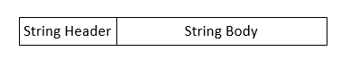
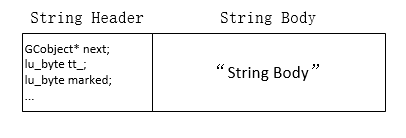
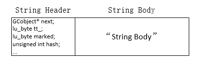
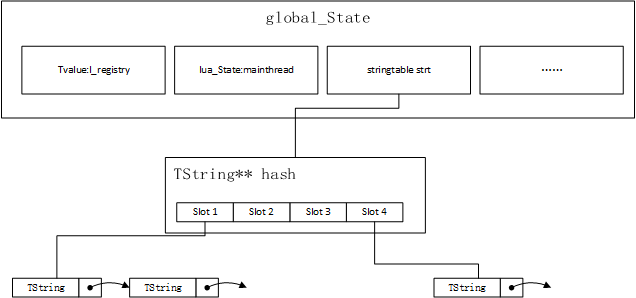
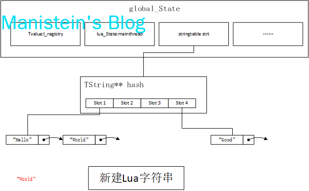
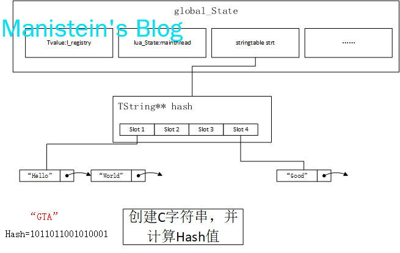
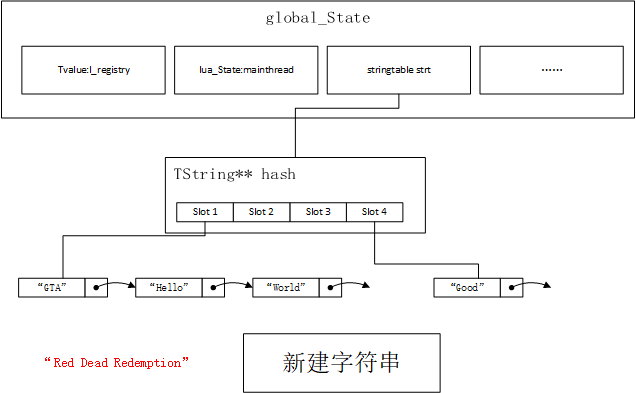
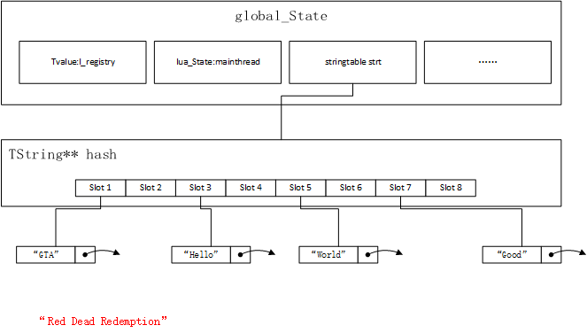
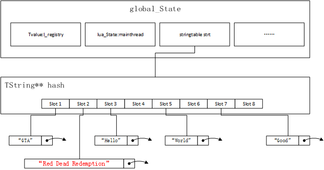

前言
上一章节我介绍了dummylua项目的gc的设计原理和实现方式，该部分我基本是仿造了官方lua-5.3.4的做法。本章节，我将为大家带来dummylua项目TString的设计实现讲解。和以往任何一篇一样，本篇我也是基本遵循lua-5.3的设计思想，但由于实现是我凭理解自己手动实现，因此不会在所有的细节上和官方lua保持一致。
任何一门语言都要支持字符串，lua也一样，本章将从lua string的数据结构开始阐述，然后深入其他细节进行阐述，并试图揭露这些设计的历史背景和原因，由于本人能力有限，如有不当之处想要指明，或是想和我一起讨论，欢迎加Q群与我讨论(QQ185017593)，我是群主，欢迎大家的到来。
Lua字符串结构
在论述Lua字符串结构之前，首先我们要捋清楚c语言字符串和lua字符串的关系，我们都知道，lua代码是需要通过c来编译解析生成opcode，最后交给由c写的解释器负责执行这些指令，因此lua脚本首先要经过c的解析，才能转换成lua所能使用的内部结构，比如下面一段lua代码：
local str = "hello world"
print(str)很直观，str是一个lua字符串，当lua解释器运行这个脚本时，需要创建一个”hello world”的字符串。然而实际上，这段脚本，lua解释器并非新建一个c的char*变量或者是char数组去存放并使用这个”hello world”，而是需要创建lua内部能够使用的字符串类型，其步骤是，”hello world”这个str首先只能被c读取，然后存入c的char*或char[SIZE]对应的buffer中，再以buffer为内容创建对应的lua字符串，以备其（指的是包含“hello world”的lua字符串）能够在虚拟机中被使用。对此，我们后续只需要关注，lua如何通过char*变量创建lua字符串即可，后文中，我们统一将lua字符串成为TString。
从lua-5.2.1开始，字符串就分为长字符串和短字符串了[1]，其中短字符串会进行充分的hash运算，并且进行内部化处理，借以提高lua虚拟机对字符串操作的效率,和节约内存（极可能少去malloc新内存）。而长字符串则不进行充分的hash运算，且不进行内部化，关于为何要这样做，后续小节我会详细进行讨论。dummylua也是遵循这种区分长短字符串的方式进行设计和实现的。
在开始深入探讨其他部分之前，我先来介绍一下dummylua字符串的结构，我并不想在一开始就贴上大段的代码，这里只展示一个概念图，因为大段的代码只会过早暴露太多的设计细节，使得我们讨论的问题变得索然无味，现在我们来看看图1的结构：
图1
上图给我们展示了一块连续的内存块，这里包含了String的Header和String的Body部分，Header包含了String的类型（长字符串或短字符串）、hash值、长度等信息。不同类型的字符串包含的头部字段也是不同的，虽然他们内部字段不同，但是Header的size都是一致的，而String的Body部分，则是字符串内容的本体所在，真正放字符串内容的地方，相当于char*。在lua中，String Body短于或等于40字节的是短字符串，长于40字节的是长字符串。
lua在c语言层面，对字符串求size，本质是需要求出String Header和String Body的总size大小（单位是byte）。
这一小节，我对dummylua的TString类型，在宏观上进行了介绍，我们暂时不用太过关注Header包含哪些部分，目前只需要关心TString包含GC的CommonHeader，其中有一个字段是表示类型的tt_变量，如图2所示，后面我们继续深入探索其他部分。
图2
字符串的哈希运算
上一节我介绍了TString的概念结构，本节要探讨的是lua字符串的hash运算。lua的hash运算，主要针对body部分，header并不参与hash计算。计算完的hash值将被记录在String Header内，如图3所示：
图3
我们都知道，hash运算的目的，是为每一个字符串或文档内容生成相同长度不同值的字符串或者是数值，输入的文件内容，字符串只要有细微的差别，都能做到hash值的极大不同，hash code通常是用来识别不同文档或字符串用的。关于hash更多的介绍，与在网络安全领域的应用，可以参考我另一篇blog，《网络安全初探》，这里只讨论hash算法本身，lua-5.3的hash运算如下所示：
unsigned int luaS_hash(struct lua_State* L, const char* str, unsigned int l, unsigned int h) {
h = h ^ l;
unsigned int step = (l >> 5) + 1;
for (int i = 0; i < l; i = i + step) {
h ^= (h << 5) + (h >> 2) + cast(lu_byte, str[i]);
}
return h;
}上面的参数中，str表示String Body部分，l表示他的长度，而h则是外部传入的一个参与hash运算的种子，这个种子在lua虚拟机创建时就确定了，创建的那一刻具有随机性，创建后不再改变，其代码如下所示：
static unsigned int makeseed(struct lua_State* L) {
char buff[4 * sizeof(size_t)];
unsigned int h = time(NULL);
int p = 0;
addbuff(buff, L, p);
addbuff(buff, &h, p);
addbuff(buff, luaO_nilobject, p);
addbuff(buff, &lua_newstate, p);
return luaS_hash(L, buff, p, h);
}可以看到，这个种子，是由lua_State实例的地址，当前时间值，luaO_nilobject变量的地址和lua_newstate函数地址决定的，具有极强的随机性，外界无法捉摸。现在我们返回luaS_hash来观察其hash运算。首先该函数对传入的hash种子，对字符串的长度进行了xor运算。然后是小于32字节的每个字符都会参与hash运算，大于等于32字节的，则会至少跳过一个字节的方式进行hash运算，其计算方式也很简单(l >> 5) + 1。
至于hash算法为何喜欢使用xor来运算，这个和xor运算的性质有关系，它能够使二进制值0和1进行相对平均的分布，我们通过一个例子来对xor、and和or来进行简单的比较：
A B AND
0 0 0
0 1 0
1 0 0
1 1 1
A B OR
0 0 0
0 1 1
1 0 1
1 1 1
A B XOR
0 0 0
0 1 1
1 0 1
1 1 0我们发现通过XOR运算，结果中0和1的数量是相当的，有研究表明，or运算会产生3/4的1，and会产生3/4的0，只有xor能做到均匀分布[2]，这个性质正好符合hash运算需要进行均匀散列运算的要求，因此它大量运用在hash算法里。我们计算完的hash值，最终会存入String Header的hash字段中。
本节我们探讨了lua hash算法的实现细节，但留下了一个疑惑，就是为什么要生成一个hash种子？这个问题留在后面来解答。
短字符串与内部化
文章一开始我们就在讨论字符串内部化了，但到底什么是字符串内部化？它的作用是什么？如何使用它？
字符串内部化的本质是将字符串缓存起来，所有拥有相同内容的字符串共享一个副本，其步骤是将字符串计算String Body的hash值后，放入一个hash map中，然后以后有要用到相同的字符串时，则直接返回该字符串的指针，以做到字符串共享，提升lua的运行效率。这种方式只适用于短字符串，也就是我们前面说的String Body小于40字节的字符串。要理解字符串内部化，首先我们要熟悉字符串内部化实现的基础。我们的lua虚拟机在创建以后，会生成一个size是2的n次幂的数组，这个数组将作为我们短字符串的hash表，我们将他称之为strt（意为string table），为什么数组能做hash表？我一会会解释。首先我们来看看，一个lua虚拟机初始化好以后，这个hash table的存在如图4所示：
图4
现在我来解释一下上图的含义，strt是一个TString*类型的一维数组，他的长度是2的n次幂，每个hash表的slot，指向一个字符串单向链表（链表next指针是包含在String Header中的），字符串内部化的本质，就是为每个字符串创建唯一的实例，当要创建新的字符串时，首先在hash表中找，找到对象时则返回该指针，找不到则新建并插入。详细的步骤如下所示：
- 已知c层字符串char* str，要为str创建一个lua TString对象，首先计算str的hash值
- 在完成hash值计算以后，查找String Body和str相同的TString对象，可能在strt的哪个slot中，方式是slot_idx = hash & (strt->size - 1)。因为全局字符串表strt的size是2的n次幂，所以hash & strt->size - 1必定是0 ~ strt->size - 1之间的值（如4-1=3，二进制表示0112，任何正整数和它进行&运算区间都是在0~3之间，这也是为什么strt的size必须是2的n次幂的原因），不会超出strt的有效范围。
- 找到对应的slot以后，取出对应slot引用的TString链表，遍历链表，如果找到String Body和str匹配的lua TString对象，则返回其指针，否则直接插入该链表的头部。
图5
图5展示的是，要创建内容为“World”的lua TString实例，先计算World的hash值，再计算出“World”可能能在Slot 1的位置的位置找到，然后查找该Slot的TString链表，最后遍历链表找到内容与之匹配的TString实例，最后返回指针。
图6
图6展示的是，要创建内容为“GTA”的lua TString实例，先计算“GTA”的hash值，再计算出“GTA”可能在的Slot位置，并遍历查找对应的TString链表，最后没找到，则新创建一个lua TString实例，并插入该Slot位置的TString链表首部。
前面我们展示了创建字符串的两个流程，查找和新建。而如果全局字符串表strt如果是固定的，那么TString链表将会很长，最终查找效率会退化成O(n)，这显然不是我们愿意见到的，因此，当字符串数量到达一定数量时，strt就会拓展为原来的两倍，并且所有的字符串都会重新做mod操作（即hash & (new_size - 1)）分配到新的Slot中，组建新的TString链表。而在什么情况下会触发resize呢？一种是已经存在的lua TString数量>=strt->size的时候会触发，还有一种则是lua TString数量<=strt->size / 2时，需要缩小为原来的一半。这里有一个特点，即TString的数量，始终不能超过strt的size。这样做有个好处，则是每个Slot尽可能保证只有一个lua TString实例，即便偶尔有hash碰撞，组成的TString链表也不会太长，是的查找效率保持在O(1)。
我们先来看看拓展的情况，如图7所示，此时新建一个全新的短字符串s = “Red Dead Redemption”，我们先计算它的hash值，不论它放到哪个位置，当前的TString实例已经超过了全局字符串表strt的当前总长，因此此时，strt需要扩充为原来的两倍，并且所有的TString实例将会被重新分配到新的Slot中，如图8所示。
图7
图8
所有已存的TString实例安排好以后，将会为”Red Dead Redemption”创建一个新的TString实例，并计算出其所在的Slot，并关联起来：
图9
缩小的情况和扩展时类似，但是要保证TString的数量要小于或等于当前strt size的一半，这样每个TString对象要重新排列，查找对应的Slot，方式则是new_slot_idx = hash & (strt->size / 2 - 1)。然后就可以执行缩小操作了。
这里对删除字符串做一个简要说明，删除一个lua短字符串，首先要对String Body做hash值运算，并且通过hash & strt->size的运算定位到其在哪个Slot中，最后遍历TString链表找到指定的TString实例，最后将其移除。lua字符串的删除行为，一般是由gc发起的。
本节我们通过图文，对短字符串的内部化进行了详细的讨论，了解到了内部化的本质和特征，以及它为何能够提升lua的运作效率，下一节我们将讨论lua长字符串的一些内容。
长字符串与惰性哈希
和短字符串不同，lua的长字符串不会进行内部化，与全局字符串列表没有任何关系，因此对于长字符串，lua虚拟机是直接创建它的，因为和strt没有关联，所以在创建阶段，它甚至不需要进行hash值运算，这样的结果就是，对于长字符串而言，哪怕String Body完全一致，lua虚拟机也会为其创建独立的TString实例。长字符串的hash运算，并不是充分的hash运算，并且只有在需要的时候才进行，借以提高lua虚拟机的运行效率。具体的处理，我们会在程序实现一节充分介绍。
Lua-5.2.0的Hash Dos攻击
Lua为什么要将长字符串和短字符串区分开来，并且只对短字符串做内部化处理？其实在lua-5.2.0这个版本中，lua其实是不分长字符串和短字符串的，所有的字符串都会做内部化处理，并且留下了一个非常致命的Hash Dos攻击漏洞，并在社区上被提出来了[3]，在深入这个问题之前，我们不妨查看一下lua-5.2.0创建字符串的代码
// lua-5.2.0 lstring.c
TString *luaS_newlstr (lua_State *L, const char *str, size_t l) {
GCObject *o;
unsigned int h = cast(unsigned int, l); /* seed */
size_t step = (l>>5)+1; /* if string is too long, don't hash all its chars */
size_t l1;
for (l1=l; l1>=step; l1-=step) /* compute hash */
h = h ^ ((h<<5)+(h>>2)+cast(unsigned char, str[l1-1]));
for (o = G(L)->strt.hash[lmod(h, G(L)->strt.size)];
o != NULL;
o = gch(o)->next) {
TString *ts = rawgco2ts(o);
if (h == ts->tsv.hash &&
ts->tsv.len == l &&
(memcmp(str, getstr(ts), l * sizeof(char)) == 0)) {
if (isdead(G(L), o)) /* string is dead (but was not collected yet)? */
changewhite(o); /* resurrect it */
return ts;
}
}
return newlstr(L, str, l, h); /* not found; create a new string */
}上面这段代码，我们可以了解到，在lua-5.2.0的版本创建字符串的几个特点：
- 字符串不论长短，一律实行内部化。
- 小于32字节(2^5=32)的字符串将进行充分的hash运算，大于的则不充分。这点是由于内部化的目的是为了让相同内容的字符串共享一个副本，尽可能减少malloc和free的操作，既希望减少内存，又希望提升性能。但是长字符串的hash运算将会造成性能上的问题，因此这里采取了长字符串不充分hash的策略，字符串越长，hash越不充分。
- hash运算，只依赖于算法，以及传入的c字符串的内容已和长度，也就是说，客户端有办法知道构造什么样的字符串，能够生成相同的hash值。
- 内部化的结果，就是需要频繁的查询，但是我们也看到了，经过hash运算后，我们能定位到一个具有相同内容的lua字符串，可能在strt hash表中的位置，并且将存在这个位置的TString链表取出，并遍历查找是否已经有内存实例存在。遍历查找的过程，先对比hash值，再对比长度，如果都匹配上了，需要对String Body和要新创建的字符串进行字符串匹配（这个过程很耗），之所以要进行hash值比较和长度比较，目的是尽可能避免直接进行字符串匹配，造成性能上的极大损耗。
上述几点，则是lua-5.2.0关于lua字符串创建的几个特点所在，目前光看这几点，难以让我们对Hash Dos攻击产生直观的感受。我们不妨先来研究一下，客户端如何构造相同hash值的不同字符串。
#include <stdio.h>
#include <string.h>
unsigned int hash(int l, const char* str) {
unsigned int h = (unsigned int)l; /* seed */
unsigned int step = (l>>5)+1; /* if string is too long, don't hash all its chars */
unsigned int l1;
for (l1=l; l1>=step; l1-=step) /* compute hash */
h = h ^ ((h<<5)+(h>>2)+(unsigned char)str[l1-1]);
return h;
}
int main(void) {
const char* str1 = "helloworld, hello world, hello world, hello world";
const char* str2 = "hxlLoMorld, hello world, hello world, hello world";
const char* str3 = "asdfasdfasdfasdfasdfasdfasdfasdfasdfasdfasdfasdfa";
printf("str1 len = %ld, str2 len = %ld, str3 len = %ld\n", \
strlen(str1), strlen(str2), strlen(str3));
printf("str1 hash = %u, str2 hash = %u, str3 hash = %u",\
hash(strlen(str1), str1), hash(strlen(str2), str2), hash(strlen(str3), str3));
return 0;
}上述代码我截取了hash计算的部分，str1、str2和str3均是不同的字符串，而str1和str2则是高度相似，但是却不完全相同，通过提出去来的hash算法，我们得到如下的结果：
str1 len = 49, str2 len = 49, str3 len = 49
str1 hash = 2931300550, str2 hash = 2931300550, str3 hash = 3850065186我们可以发现，str1和str2的hash值相同，长度相同，但是内容不同，由于lua-5.2.0的长字符串hash运算并不充分，使得我们有机会构造hash值相同、长度相同、但是值不同的字符串，如上所示的代码，由于字符串长49字节，偶数位字符并不参与hash运算，因此我们可以修改这些字符为其他字符，使其在保持hash值相同的情况下，改变内容。换句话说，只要我的字符足够长，我们完全有可能构建几百万甚至上千万个符合这种条件的不同字符串。
现在问题变得非常有意思了，似乎距离我们的目标更为接近了，但是对于攻击而言，我们仍然缺乏直观的感受，我们需要更丰满的例子来阐述这个问题。现在假设我们有这样一个服务器程序：
- 通过c层，监听连接，并接受来自客户端经过序列化的请求。
- c层网络模块，在处理好整包以后，将序列化好的数据包传给一个c层回调函数。
- c层回调函数，先对数据包进行反序列化，得到通用结构后，将参数压入lua栈中，然后调用lua层回调函数处理业务。
这个c层的callback函数的，伪代码如下所示：
int network_cb(struct lua_State* L, const char* package) {
struct request req = pb.decode(package);
luaL_pushstring(L, req.command_str); //将c字符串转成lua字符串，以便lua虚拟机能够正常运行
luaL_pushstring(L, req.json_param_str);
luaL_pcall(L, 2, 0); // lua_State已经注册了一个lua层回调函数，c层先把命令字符串和参数字符串转成lua字符串后，交给lua层处理。
return 0;
}上述代码，假设lua_State的栈顶已经压入一个lua函数，用于处理请求逻辑，客户端发送的数据包，收齐之后会传给这个network_cb函数，并且在c层进行反序列化操作，然后将请求命令和参数压入栈中，让lua虚拟机处理。在这个层面，回调层并不关心req.command_str和req.json_param_str具体有什么内容，这里要做的事情就是将字符串传给lua层，让其处理，在将字符串压栈的过程中，也就是在调用luaL_pushstring函数时，lua框架会根据c字符串的内容，创建lua TString实例，并压如lua_State的栈顶。也就是说不论command_str或json_param_str是否合法，这一层都不会检查到，会直接创建出lua字符串交给lua虚拟机处理。如果我们使用的是lua-5.2.0，那么现在就给攻击者留下了可乘之机，攻击者完全可以将command_str或json_param_str设置为一个很长的字符串，并且可能构造出几万，十几万，几十万甚至几百万个hash值相同，长度相同但是内容不同的字符串，传过来，每个请求每个字符串都会进行一次内部化处理，由于这些海量的字符串的hash值相同，因此他们在全局字符串表strt的hash表中，只用到一个slot，并且全部在TString链表中线性排列，于是查询效率退化为O(n)，更严重的是，在字符串内部化的查找阶段（新的不合法的请求到来时，也会进行一次内部化处理），这些字符串的hash值相同，并且长度相同，根据它的对比规则，最终会落到比较字符串这种效率极低操作上，在海量不合法的字符串面前还要进行内部化操作，会极大损耗服务器的性能，甚至导致瘫痪，最终使得DOS攻击成功。
为了解决这个问题，从lua-5.2.1开始，官方lua将字符串拆分成长字符串和短字符串，其中String Body大于40字节的是长字符串，长字符串不参与内部化处理；而小于等于40字节的则是短字符串，短字符串基本会充分进行hash运算，不同的字符串，基本会有不同的hash值，极小可能会发生hash冲突进而导致字符串插入链表，同时它也加入了随机生成的hash种子参与，客户端无法知道这个hash种子的具体数值，无法有效构建出正确的hash值验证攻击的有效性。这样执行上面代码时，如果command_str是长字符串，两次不同的请求，即便是command_str的内容相同，都会创建两个独立的lua TString实例，这样虽然在内存上的使用更多了，但是也更安全了，算是彻底解决了Hash Dos攻击的问题了。
本节我通过lua-5.2.0中一种可能的Hash Dos攻击的途径，解释了为什么现在版本的lua需要区分长字符串和短字符串，并且只对短字符串进行内部化处理的原因，到目前位置，所有概念上的前置知识已经全部介绍完毕了，下一节我将介绍lua TString的代码实现。
程序实现
终于进入到程序实现的环节，我们先介绍lua字符串TString的数据结构：
// luaobject.c
typedef struct TString {
CommonHeader;
unsigned int hash; // string hash value
// if TString is long string type, then extra = 1 means it has been hash,
// extra = 0 means it has not hash yet. if TString is short string type,
// then extra = 0 means it can be reclaim by gc, or if extra is not 0,
// gc can not reclaim it.
unsigned short extra;
unsigned short shrlen;
union {
struct TString* hnext; // only for short string, if two different string encounter hash collision, then chain them
size_t lnglen;
} u;
char data[0];
} TString;该数据结构展示了TString的全貌，现在我来对每一个字段作解读：
- CommonHeader：这是所有GC对象的公共头部，包含指向下一个GC对象实例地址的GCObject* next指针，表示类型的int型变量tt_，以及表示标记状态的marked变量。如果你没有看过GC部分或者已经印象模糊，可以回顾上一章的关于GC部分的内容。
- hash：String Body经过hash计算后所得到的值，将存放在这里。
- extra：特殊的变量，不同的类型有不同的含义。
- TString为长字符串时：当extra=0表示该字符串未进行hash运算；当extra=1时表示该字符串已经进行过hash运算。
- TString为短字符串时：当extra=0时表示它需要被gc托管；当extra=1时表示该字符串不会被gc回收。
- shrlen：仅对段字符串有效，表示段字符串的长度，既String Body的长度是多少。
- u：这是一个union结构，当TString为长字符串时，hnext域有效，当全局字符串表，有其他字符串hash冲突时，会将这些冲突的TString实例链接成单向链表，hnext的作用则是指向下一个对象在哪个位置。当TString为长字符串时，lnglen域生效，并且表示长字符串的长度也就是String Body的长度是多少。
- data：这个是用来标记String Body起始位置用的，配合shrlen或lnglen，我们能够找到String Body的结束位置在哪里。
我已经对lua字符串类型TString做过概念上的介绍，即其分为长字符串和短字符串，并且详细介绍了为何需要这样区分，这里只需要对不同的字段做说明，相信已经能够给读者比较清晰的概念呈现了。
在了解了TString的数据结构后，接下来来介绍全局字符串列表的数据结构和初始化流程，全局字符串列表的数据结构如下所示：
// luastate.h
// only for short string
struct stringtable {
struct TString** hash;
unsigned int nuse;
unsigned int size;
};这是实际上是一个TString*类型的一维数组，其中nuse表示当前有多少个经过内部化处理的短字符串，而size表示这个stringtable结构内部的hash数组的大小有多大。上述内容非常容易理解，接下来我们来看看，这个全局字符串列表存在哪个位置，以及它的初始化流程是怎样的，事实上，我们的global_State包含了一个stringtable类型的变量，它叫做strt变量：
// luastate.h
typedef struct global_State {
struct lua_State* mainthread;
lua_Alloc frealloc;
void* ud;
lua_CFunction panic;
struct stringtable strt;
TString* strcache[STRCACHE_M][STRCACHE_N];
unsigned int seed; // hash seed, just for string hash
TString* memerrmsg;
TValue l_registry;
//gc fields
lu_byte gcstate;
lu_byte currentwhite;
struct GCObject* allgc; // gc root set
struct GCObject** sweepgc;
struct GCObject* gray;
struct GCObject* grayagain;
struct GCObject* fixgc; // objects can not collect by gc
lu_mem totalbytes;
l_mem GCdebt; // GCdebt will be negative
lu_mem GCmemtrav; // per gc step traverse memory bytes
lu_mem GCestimate; // after finish a gc cycle,it records total memory bytes (totalbytes + GCdebt)
int GCstepmul;
} global_State;当我们的lua虚拟机被创建时，会对这个stringtable变量strt进行初始化操作：
// luastring.c
void luaS_init(struct lua_State* L) {
struct global_State* g = G(L);
g->strt.nuse = 0;
g->strt.size = 0;
g->strt.hash = NULL;
luaS_resize(L, MINSTRTABLESIZE);
g->memerrmsg = luaS_newlstr(L, MEMERRMSG, strlen(MEMERRMSG));
luaC_fix(L, obj2gco(g->memerrmsg));
// strcache table can not hold the string objects which will be sweep soon
for (int i = 0; i < STRCACHE_M; i ++) {
for (int j = 0; j < STRCACHE_N; j ++)
g->strcache[i][j] = g->memerrmsg;
}
}这个初始化操作，主要做了几件事情，第一件是初始化stringtable类型变量strt，并且通过luaS_resize函数为其分配最小内存，MINSTRINGTABLESIZE，这个变量在dummylua中被设置为128，也就是说strt的最小hash表长度为128。另外还创建了一个不可被gc回收的字符串memerrmsg，最后初始化了一个长短字符串都可以共用的字符串缓存strcache（这个稍后讨论）。我们可以注意到，这里调整strt大小的函数是luaS_resize，它的实现如下所示：
// luastring.c
// attention please, luaS_resize is use for resize stringtable type,
// which is only use by short string. The second argument usually must
// be 2 ^ n
int luaS_resize(struct lua_State* L, unsigned int nsize) {
struct global_State* g = G(L);
unsigned int osize = g->strt.size;
if (nsize > osize) {
luaM_reallocvector(L, g->strt.hash, osize, nsize, TString*);
for (int i = osize; i < nsize; i ++) {
g->strt.hash[i] = NULL;
}
}
// all TString value will be rehash by nsize
for (int i = 0; i < g->strt.size; i ++) {
struct TString* ts = g->strt.hash[i];
g->strt.hash[i] = NULL;
while(ts) {
struct TString* old_next = ts->u.hnext;
unsigned int hash = lmod(ts->hash, nsize);
ts->u.hnext = g->strt.hash[hash];
g->strt.hash[hash] = ts;
ts = old_next;
}
}
// shrink string hash table
if (nsize < osize) {
lua_assert(g->strt.hash[nsize] == NULL && g->strt.hash[osize - 1] == NULL);
luaM_reallocvector(L, g->strt.hash, osize, nsize, TString*);
}
g->strt.size = nsize;
return g->strt.size;
}我们可以看到，要进行大小调整，需要传入一个nsize值，而这个nsize值必须是2的n次幂。它内部的处理也非常有意思，处理流程如下所示：
- 当新建尺寸nsize大于原来strt hash表的大小时，首先需要开辟一个nsize大小的TString*数组，然后原有的TString变量会重新定位到新的hash表中的slot中（slot_idx=luastring->hash & nsize - 1）。
- 当新建尺寸nsize小于原来strt hash表的大小时，首先strt->hash表内的所有TString实例，会根据nsize重新排列，定位到合适的slot中（slot_idx=luastring->hash & nsize - 1），并且开辟一块nszie大小的TString*数组，再将strt->hash中的值拷贝到该数组中，最后strt->hash将引用这块内存，以达到缩小的目的。
结合之前画的那些图，这段逻辑并不难理解。
在完成了全局字符串表创建和初始化流程以后，我们现在将目光关注于如何创建一个字符串实例，这里我们先不考虑长字符串和短字符串的的情况，而关注与一个luastring实例是如何被创建的，这个流程对长短字符串都适用。
// luastring.c
static struct TString* createstrobj(struct lua_State* L, const char* str, int tag, unsigned int l, unsigned int hash) {
size_t total_size = sizelstring(l);
struct GCObject* o = luaC_newobj(L, tag, total_size);
struct TString* ts = gco2ts(o);
memcpy(getstr(ts), str, l * sizeof(char));
getstr(ts)[l] = '\0';
ts->extra = 0;
if (tag == LUA_SHRSTR) {
ts->shrlen = cast(lu_byte, l);
ts->hash = hash;
ts->u.hnext = NULL;
}
else if (tag == LUA_LNGSTR) {
ts->hash = 0;
ts->u.lnglen = l;
}
else {
lua_assert(0);
}
return ts;
}我们的lua字符串实例，是需要被gc托管的对象，因此它是一个gcobject，要创建一个gcobject，我们必须知道TString实例的具体大小，它的大小就是String Header的字节加上String Body字节的总大小，它由sizelstring函数来计算。String Body的结尾需要加上特殊字符‘\0’，这样做的目的是能够和c语言的字符串兼容，使之在c层操作更为方便，接下里则是针对不同的TString类型，作不同的初始化操作。
lua字符串被创建前，我们还需要判断字符串是长字符串还是短字符串，不同类型的字符串，会做不同的处理，比如短字符串会进行内部化操作，而长字符串则是直接创建lua字符串实例。对于短字符串而言，在开始内部化处理之前，还需要进行hash值计算，由于文章的前半部分已经介绍了，这里就不再赘述，我们先看看我们常用的lua字符串创建函数：
// luastring.c
// only short strings can be interal
static struct TString* internalstr(struct lua_State* L, const char* str, unsigned int l) {
struct global_State* g = G(L);
struct stringtable* tb = &g->strt;
unsigned int h = luaS_hash(L, str, l, g->seed);
struct TString** list = &tb->hash[lmod(h, tb->size)];
for (struct TString* ts = *list; ts; ts = ts->u.hnext) {
if (ts->shrlen == l && (memcmp(getstr(ts), str, l * sizeof(char)) == 0)) {
if (isdead(g, ts)) {
changewhite(ts);
}
return ts;
}
}
if (tb->nuse >= tb->size && tb->size < INT_MAX / 2) {
luaS_resize(L, tb->size * 2);
list = &tb->hash[lmod(h, tb->size)];
}
struct TString* ts = createstrobj(L, str, LUA_SHRSTR, l, h);
ts->u.hnext = *list;
*list = ts;
tb->nuse++;
return ts;
}
struct TString* luaS_createlongstr(struct lua_State* L, const char* str, size_t l) {
return createstrobj(L, str, LUA_LNGSTR, l, G(L)->seed);
}
struct TString* luaS_newlstr(struct lua_State* L, const char* str, unsigned int l) {
if (l <= MAXSHORTSTR) {
return internalstr(L, str, l);
}
else {
return luaS_createlongstr(L, str, l);
}
}我们可以看到，luaS_createlongstr函数，会先判断，要创建的字符串是长字符串还是短字符串，如果是短字符串则进行内部化处理，如果是长字符串，则直接创建TString实例。字符串内部化的逻辑处理也很简单：
- 首先计算要创建的字符串的hash值
- 根据hash值，计算该字符串应该被放在strt->hash表中的哪个位置(slot_idx = hash & strt->size - 1)
- 取出该位置的TString*链表，逐个实例进行比较，如果找到同内容的TString实例，则不创建新的TString实例，将该指针返回；如果找不到，则创建新的TString实例，并插入链表头部（如之前展示的gif图所示）
接下来我们来看看字符串比较的逻辑：
// luastring.c
int luaS_eqshrstr(struct lua_State* L, struct TString* a, struct TString* b) {
return (a == b) || (a->shrlen == b->shrlen && strcmp(getstr(a), getstr(b)) == 0);
}
int luaS_eqlngstr(struct lua_State* L, struct TString* a, struct TString* b) {
return (a == b) || (a->u.lnglen == b->u.lnglen && strcmp(getstr(a), getstr(b)) == 0);
}不论是长字符串还是短字符串，他们的比较方式都一致，首先比较字符串实例的地址，地址相同自然相等。长度不同自然不相等，当地址不同，长度不同时，才会触发字符串比较的逻辑，这里的getstr函数，会将String Body的地址返回，方便我们使用TString对象的字符串值部分。
也许细心的读者会发现，在global_State的结构中，还有一个strcache的二维数组，该数组将作为字符串缓存存在。我们创建lua字符串还有另一个函数，则是luaS_new函数，它的定义如下所示：
// luastring.c
struct TString* luaS_new(struct lua_State* L, const char* str, unsigned int l) {
unsigned int hash = point2uint(str);
int i = hash % STRCACHE_M;
for (int j = 0; j < STRCACHE_N; j ++) {
struct TString* ts = G(L)->strcache[i][j];
if (strcmp(getstr(ts), str) == 0) {
return ts;
}
}
for (int j = STRCACHE_N - 1; j > 0; j--) {
G(L)->strcache[i][j] = G(L)->strcache[i][j - 1];
}
G(L)->strcache[i][0] = luaS_newlstr(L, str, l);
return G(L)->strcache[i][0];
}这个函数首先会对c层字符串str的地址进行hash运算，然后通过取膜规则，在strcache查找指定的TString实例，如果找到就返回，如果找不到，则丢弃一个，且创建一个新的TString实例并写入strcache中，这种方式对已经保存在c层且需要频繁转换为TString的c层字符串非常有效率上的帮助。strcache内的字符串缓存保存一个gc周期，gc进入sweep阶段前清空。
我们最后需要讨论的部分，就是将现有的TString模块整合到gc机制中，本章将不会对gc作深入的探讨，如果读者想深入研究可以看我的上一篇blog，《Garbage Collection基础架构》，本章只关注TString如何整合到现有的GC机制中。阅读过我上篇blog的读者应该可以回想起，dummylua的gc机制，目前包含几个阶段，分别是restart、propagate、atomic和sweep这几个阶段，restart是gc开始前的准备阶段，propagate则是传播、扫描阶段，atomic则是一次性传播、扫描阶段，sweep则是清理阶段。在propagate阶段，对TString实例进行传播扫描时，由于TString不可能包含子节点，因此可以在propagate阶段直接标记为黑色，其逻辑如下所示：
// luagc.c
void reallymarkobject(struct lua_State* L, struct GCObject* gco) {
struct global_State* g = G(L);
white2gray(gco);
switch(gco->tt_) {
case LUA_TTHREAD:{
linkgclist(gco2th(gco), g->gray);
} break;
case LUA_TTABLE:{
linkgclist(gco2tbl(gco), g->gray);
} break;
case LUA_SHRSTR:{
gray2black(gco);
struct TString* ts = gco2ts(gco);
g->GCmemtrav += sizelstring(ts->shrlen);
} break;
case LUA_LNGSTR: {
gray2black(gco);
struct TString* ts = gco2ts(gco);
g->GCmemtrav += sizelstring(ts->u.lnglen);
} break;
default:break;
}
}这里这样做的好处就是，TString实例不放入gray列表，再去做无谓的扫描，从而一定程度提升性能。除了在传播、扫描时，被标记的阶段需要做处理，我们还需要在atomic阶段结束时，将strcache清空，以避免在sweep阶段，将字符串实例删除后，在strcache留下野指针。
// luagc.c
static void atomic(struct lua_State* L) {
struct global_State* g = G(L);
g->gray = g->grayagain;
g->grayagain = NULL;
g->gcstate = GCSinsideatomic;
propagateall(L);
g->currentwhite = cast(lu_byte, otherwhite(g));
luaS_clearcache(L);
}这里的luaS_clearcache做的就是情况缓存的操作。在gc的sweep阶段，回收短字符串时，还要记得将strt内对应的短字符串指针清空，避免留下野指针：
// luagc.c
static lu_mem freeobj(struct lua_State* L, struct GCObject* gco) {
switch(gco->tt_) {
case LUA_SHRSTR: {
struct TString* ts = gco2ts(gco);
luaS_remove(L, ts);
lu_mem sz = sizelstring(ts->shrlen);
luaM_free(L, ts, sz);
return sz;
} break;
case LUA_LNGSTR: {
struct TString* ts = gco2ts(gco);
lu_mem sz = sizelstring(ts->u.lnglen);
luaM_free(L, ts, sz);
} break;
case LUA_TTABLE: {
struct Table* tbl = gco2tbl(gco);
lu_mem sz = sizeof(struct Table) + tbl->arraysize * sizeof(TValue) + twoto(tbl->lsizenode) * sizeof(Node);
luaH_free(L, tbl);
return sz;
} break;
default:{
lua_assert(0);
} break;
}
return 0;
}如果你对这个部分感到疑惑，我建议先回顾一下本系列的gc部分。到目前为止，有关TString的内容就全部结束了。
总结
TString模块，早在去年12月份就完成开发测试了，不过一直迟迟没能抽出时间来写blog，如今我也花费了不算小的篇幅来阐述dummylua项目字符串相关的内容，这个部分对于阅读官方源码字符串部分，同样具有借鉴意义。虽然和其他部分相比，这篇并不算特别复杂，但是也耗费了我整整3天满打满算的时间，原创不易，希望大家转载能够注明出处。下一篇将进入到lua Table的的设计实现的论述上，敬请期待。
Reference
[1] Lua源码欣赏 3.1.1 Hash Dos “lua 5.2.1为了解决这个问题，把长字符串独立出来。大量文本处理中的输入的字符串不再通过哈希内部
化进入全局字符串表。同时，使用了一个随机种子用于哈希值的计算，使攻击者无法轻易构造出拥有相同哈
希值的不同字符串”
[2] Why are XOR often used in java hashCode() but another bitwise operators are used rarely?
[3] Lua Hash Dos Attack